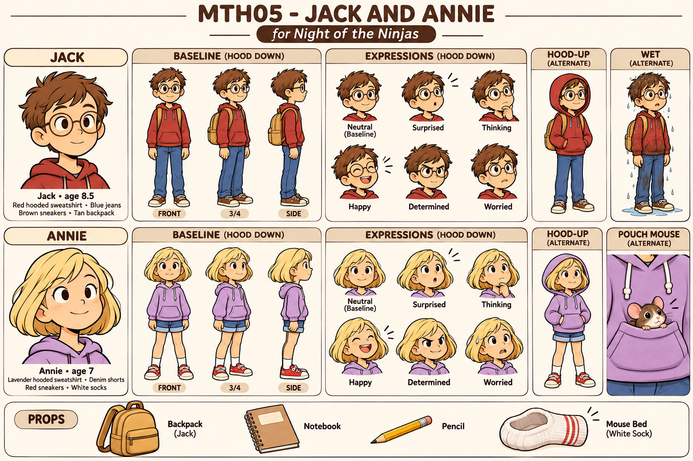

# 1·2장 이미지 일관성 계획 생성 전 확인: public/characters.html, character-bible.json, children/Peanut/ninjas 실제 시트, 검수된 grid-0017 원본을 읽고 확인했다. ## Chapter 1 마지막 배치 scene-0033~0037 - 기존 나무집과 같은 판자 바닥·벽·사각 창·책 더미·따뜻한 일몰 조명 유지. - Jack: 빨강 후드(내림), 둥근 안경·갈색 머리·청바지·운동화·배낭. Annie: 보라 후드(내림)·금발 단발·청반바지·빨간 운동화. 모두 마른 옷. - Peanut은 바닥에 있으며 아직 주머니에 들어가지 않는다. - 종이를 발견 → 질문 → 집기 → 읽고 놀람 → Morgan의 위험을 알리는 순서. Morgan은 직접 등장하지 않는다. - 4×4의 처음 5칸만 본문에 사용하며 나머지 칸은 빈 패딩으로 둔다. 패딩은 이미지 수에 포함하지 않는다. ## Chapter 2 scene-0038~0064 (16+11컷) - 시작 장소와 옷은 1장과 동일. 마지막 이동 전까지 현대 Frog Creek 나무집 내부. - 닌자 2명·흰 꽃 나무·산과 급류는 처음에는 책 속 그림에만 존재한다. 아이들 옆 실물 닌자나 Morgan을 그리지 않는다. - 책 속 닌자는 실제 닌자 시트의 키 차이·검은 복장·가린 얼굴·등의 칼을 참조한다. 마스터는 이 장에 등장하지 않는다. - 종이는 잘린 문장의 뜻을 바꾸는 임의 완성 문구를 쓰지 않는다. 읽기 본문에 정확한 원문이 있으므로 종이 삽화 글자는 비가독 필기로 처리한다. - 열린 책: Jack이 들고 창 근처에서 읽음 → Annie가 가져가 손에 듦 → 그림을 가리켜 소원. - Peanut은 scene-0060에서 Annie가 집어 앞주머니에 넣는다. 이전에는 바닥, 이후에는 주머니에 한 마리만. - 이동은 바람·흔들리는 나뭇잎·회전하는 나무집으로 표현하며 아이들 얼굴·옷은 바뀌지 않는다. 옷 젖음·후드 올림은 아직 금지. - 끝의 물소리는 정지한 나무집 내부에서 열린 창 너머 급류로 표현한다. 아이들은 아직 눈을 감은 상태로 두고 닌자 대면은 다음 장으로 미룬다. ## 매 배치 검수 - 동일한 캐릭터 시트와 기존 나무집 이미지를 참조로 전달한다. - 자연 해상도를 기록하며 보간 확대를 원본 고해상도로 보고하지 않는다. - 실제 수평 경계와 행별 수직 경계를 검출하고 오버레이 및 모든 크롭의 컨택트시트를 직접 확인한다. - 옆 컷 침범·흰 여백 잔류·인물 추가·중복 팔·소품 이동을 확인한다. 분할 오류는 원본에서 재크롭, 서사 오류는 해당 컷만 수정한다. - 각 배치 검수 후 공개하고 이전 Pages 배포 SHA 성공을 확인한 뒤 다음 배치를 공개한다.



# Chapter 3 · E-hy! 생성 전 일관성 계획 생성 전에 기존 chapter-consistency.html, character-bible.json과 children/Peanut/ninjas 실제 시트를 다시 읽고 확인했다. - scene-0065~0089: 25컷, 16+9의 2배치. 남는 7칸은 통합하지 않는다. - 장소: 일본 산비탈의 흰 꽃 나무에 있는 같은 나무집. 창 아래로 급류·바위·계곡. 실내 판자벽·책·밧줄 사다리 유지. 아직 밤이 되기 전의 서늘한 저녁. - Jack 빨강 후드 내림·원형 안경·청바지·갈색 운동화·갈색 배낭, Annie 보라 후드 내림·금발 단발·청반바지·빨간 운동화. 옷과 신발은 아직 마름. - Peanut은 Annie 앞주머니 속 한 마리. 바닥 또는 야외에 추가하지 않는다. - Tall Ninja와 Short Ninja는 이번 장부터 실제로 바위 위에 등장. 검은 옷·가린 얼굴·등에 묶인 칼, 키 차이 유지. Short Ninja는 여성이지만 아이들은 아직 모름. Master·Morgan·Samurai는 등장하지 않는다. - 아이들 창밖 관찰 → 창 아래 숨음 → ninja book 읽음 → 노트·연필을 꺼냄 → 눈이 마주침 → 닌자 돌진 → Pennsylvania book 찾기 실패 → 사다리 끌어올림 → 나무줄기 등반 → 나무집 진입 순서. - 책 속 역사 설명은 Jack이 책을 읽는 장면으로 표현. 전쟁이나 스파이 삽화를 현장 사건으로 추가하지 않는다. 노트 문구는 웹 원문에서 읽도록 하고 삽화에는 임의 문장을 넣지 않는다. - 마지막에는 닌자 두 명과 어린이 두 명, Peanut은 주머니. 칼을 뽑거나 신체 접촉·폭력 장면을 추가하지 않는다. - 생성 시 위 세 인물 시트를 직접 참조하고 실제 경계를 검출한다. 패딩이 경계 검출을 방해하면 수동 좌표로 재크롭한다. 전체 오버레이와 각 컷 컨택트시트를 검수한 뒤 순차 배포한다.
# Chapter 4 · Captured 생성 전 일관성 계획 생성 전 장별 일관성 페이지, 원문 2파트, children/Peanut/ninjas 실제 시트를 다시 읽고 확인했다. - scene0090~0135, 46컷:16+16+14의 3배치. Part 경계를 정확히 유지한다. - 실내는 같은 판자 나무집·바닥 출입구·밧줄 사다리. 사다리는 천장에 달지 않는다. 이후 흰 꽃 나무 아래→저녁 산길→넓고 차가운 급류. - Jack 빨강 후드 내림·둥근 안경·청바지·갈색 운동화·배낭, Annie 보라 후드 내림·금발 단발·청반바지·빨간 운동화. Peanut은 Annie 주머니 속 한 마리. - 키 큰 닌자 남성과 키 작은 닌자 여성, 검은 복장·가린 얼굴·등의 칼집. 마스터·사무라이·Morgan은 없음. 손의 쇠갈고리는 첫 장면에 벗고 이후 손에 남기지 않는다. - 쪽지: Annie→Tall Ninja→Short Ninja→Short Ninja 상의 주머니. 이후 아이 손에 다시 그리지 않는다. - Short Ninja가 사다리를 바닥 출입구로 내림→두 닌자가 손으로 하강→Annie 먼저→Jack은 노트·ninja book을 배낭에 넣고 따라 내려감. - Short Ninja가 양손으로 두 아이의 팔을 하나씩 잡고 앞에서 이끌며 Tall Ninja는 뒤따른다. 팔 소유자와 인원 4명을 확인한다. - 급류: 닌자들이 먼저 들어감→아이들이 손잡고 발을 담금→추워 나옴→닌자 귀환→Tall이 Jack을, Short가 Annie를 어깨에 올림→두 닌자가 건넘. 아이 옷 전체를 젖게 하지 않으며 이때부터 신발·양말이 젖는다. - 안경은 계속 착용. 칼은 끝까지 칼집 안. 들고 건너는 마지막 장면은 아이 둘·닌자 둘, 생쥐 한 마리 주머니. 어깨 탑승과 손·팔은 단순 구도로 확인한다. - 동일 시트를 매 배치 참조하고 실제 경계 검출·오버레이·컨택트시트를 검사한다. 불확실한 경계는 수동 재크롭. 잘못 생성한 장면만 표적 수정한다. 배치별 순차 배포·Pages SHA 확인.
# Chapter 5 · Flames in the Mist 생성 전 일관성 계획 장별 일관성 페이지, character-bible, 원문과 children/Peanut/ninjas 실제 시트를 생성 전에 다시 읽고 확인했다. - scene0136~0161:26컷,16+10의 2배치. 빈6칸 제외. - 급류 건넌 뒤 땅에 내려옴→보름달 뜨는 바위 산비탈→소나무 숲→동굴 입구. 얼굴은 달빛에서도 읽히게 유지. - Jack 빨강 후드 내림·원형안경·청바지·갈색 운동화·배낭, Annie 보라 후드 내림·금발단발·청반바지·빨간 운동화. 신발은 젖었지만 상의 전체를 흠뻑 젖게 하지 않는다. Peanut은 Annie 주머니 한 마리. - 키 큰 남성·키 작은 여성 닌자, 얼굴 가림·검은 옷·등의 칼집 유지. 쪽지는 Short Ninja 주머니에 있고 아이 손에는 없음. - 횃불은 아래 계곡 안개 속 먼 불빛으로만 보인다. 이 장에서는 사무라이 얼굴이나 갑옷을 임의로 확대하지 않는다. - 닌자들이 손을 들어 기다리게 함→둘 다 숲 그림자 속으로 사라짐→아이들만 책·노트 확인→둘 돌아옴→책을 넣음→동굴 입구로 안내. - 마스터는 책 속 설명에만 해당하며 실제 동굴 안 등장은 다음 장. 책을 읽는 장면으로 표현하고 현장 마스터를 추가하지 않는다. - 실제 수평·행별 수직 경계를 확인해 분할하고 오버레이·전체 컨택트시트 검수. 원문 순서·팔·인원·배낭과 생쥐 위치 확인 후 배치마다 순차 공개.
# Chapter6 · Shadow Warrior 생성 전 계획 원문·장별 일관성 페이지와 children/ninjas 실제 시트를 다시 확인했다. - scene162~202:16+16+9컷,3배치. 촛불 동굴→달빛 소나무 숲. 아이들은 바닥, 마스터는 돗자리. - Jack 빨강 긴팔 후드 내림·원형안경·청바지·갈색 운동화·갈색배낭. Annie 보라 긴팔 후드 내림·금발단발·청반바지·빨간운동화·배낭 없음. 젖은 신발만 유지. Peanut 한 마리 Annie 주머니. - 마스터 시트의 회색 짧은머리·드러난 얼굴·검은옷 유지. scene185 전에는 칼 착용 없음,185에서 칼집을 착용하고 이후 유지. 닌자 둘은 가린 얼굴·검은옷·등의 칼집. - 짧은 여성 닌자가 쪽지를 마스터에게 전달한 상태로 시작. scene177 마스터가 쪽지 제시→179 Annie에게 반환. 이후 Annie 주머니 보관. - tall ninja가 scene178에 재등장해 신호. 다른 닌자를 더하지 않는다. Samurai·Morgan은 말로만 언급하며 현장에 추가하지 않는다. - 195 자연의 세 원칙은 대화 장면으로 표현하고 마법변신이나 텍스트 그래픽을 추가하지 않는다. - 마지막 master는 먼저 사라짐→두 닌자가 아이들을 밖으로 안내하고 숲을 가리킴→둘도 떠남→아이둘만 남음. - 매 배치 실제 경계 검출, 전체 크롭 오버레이·컨택트시트 검수. 팔·쪽지·칼·생쥐·인원 확인 후 공개.
# Chapter7 · To the East 生成 전 일관성 계획 장별 일관성 페이지·원문 두 파트와 children/Peanut/supporting 실제 시트를 읽고 확인했다. 기존 승인 계획을 직접 실행하며 이미지 자산만 추가한다. - scene203~241:16+16+7컷 3배치. 어두운 소나무 숲→달빛 빈터→바위 산비탈→큰 바위 뒤. - Jack 빨강 긴팔 후드·원형안경·청바지·갈색운동화·갈색배낭. Annie 보라 긴팔 후드·금발단발·청반바지·빨간운동화·배낭 없음. 옷은 마르고 신발만 젖은 상태. Peanut 한 마리 Annie 주머니. - scene203~205 둘 다 후드 내림.206~207 Annie 후드 올려 끈 조임, Jack 내림.208 Jack도 후드 올림. 이후 둘 다 후드 올린 상태를 장 끝까지 유지. 얼굴은 가리지 않고 안경·금발 앞머리 보존. - 노트·연필 꺼내 세 원칙 기록→209 배낭에 넣음. 막대기는220 Annie가 주움→223 땅에 수직으로 꽂음. 달빛 그림자로 방향 추정, 실제 나침반·화살표 글자 추가 금지. - 바위 뒤231~: 처음 횃불은 먼 산비탈 불빛.234 두 아이 숨음,235 Jack ninja book 꺼냄.236~237 사무라이는 책 속 그림,239~241 실제 사무라이 한 명 접근. 갑옷·투구·두 칼은 supporting 시트와 일치. 칼을 아이에게 휘두르거나 싸움 추가 금지. - Master·닌자 둘은 이미 떠났으므로 회상이나 대사에도 현장 출연 금지. 마지막은 사무라이 한 명과 숨은 아이들의 공간 관계 유지. - 매 배치 동일 시트와 프롬프트 상태표 전달. 원문 문단 ID 연결. 실제 경계·행별 좌표 검출, 오버레이와 전 컷 검수 후 배치별 공개. 틀린 상태·추가 인물·크롭은 해당 컷 수정.